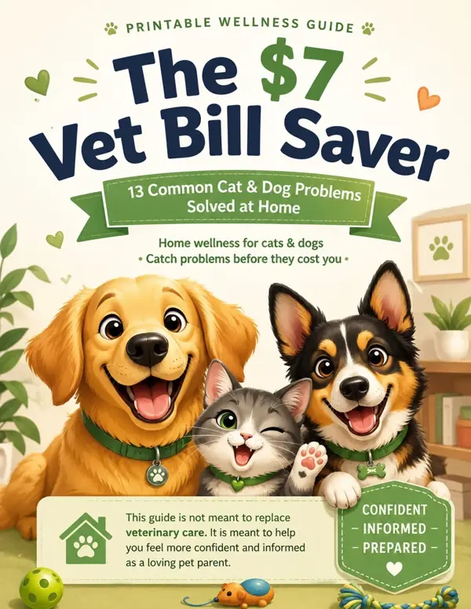

Check the label.
Find “kcal per cup” for dry food and calories by weight for wet food. Cup size alone cannot tell you how much energy is in a meal.
Less guesswork at mealtime. Get a daily feeding estimate for your cat or dog, using the food you actually serve.
No account.
No email needed.
Just a little bowl wisdom.

A littleMeet The $7 Vet Bill Saver — a printable wellness guide for cat and dog parents who want to feel more confident about everyday pet care.
Gumroad currently lists US$5. Confirm currency, taxes and the final price at checkout.
A companion to veterinary care. No guide can diagnose your pet, promise savings or replace a vet visit.
Find “kcal per cup” for dry food and calories by weight for wet food. Cup size alone cannot tell you how much energy is in a meal.
Wet and dry portions share one daily calorie budget. The slider divides calories between them, not the weight or volume of food.
Your pet’s condition and weight trend matter more than a single number. Review the estimate with your vet and adjust their routine together.
Prefer something on the fridge? Keep the free feeding cheat sheet nearby, or explore the existing pet-care download collection.
The collection opens a Google Form and may request your email.
As an Amazon Associate, we earn from qualifying purchases. These are shopping links, not personalised medical recommendations.